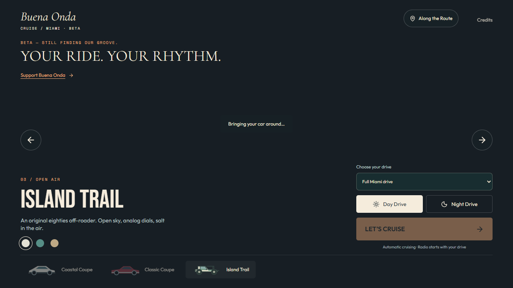
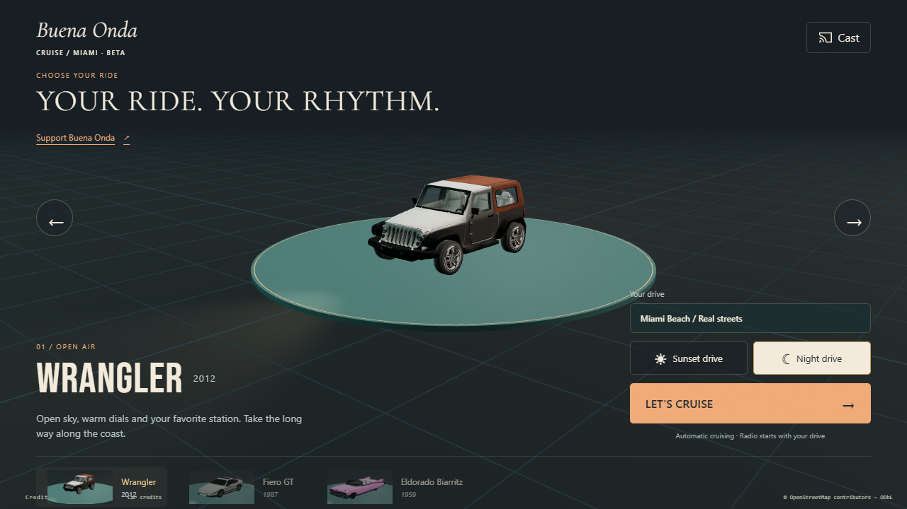
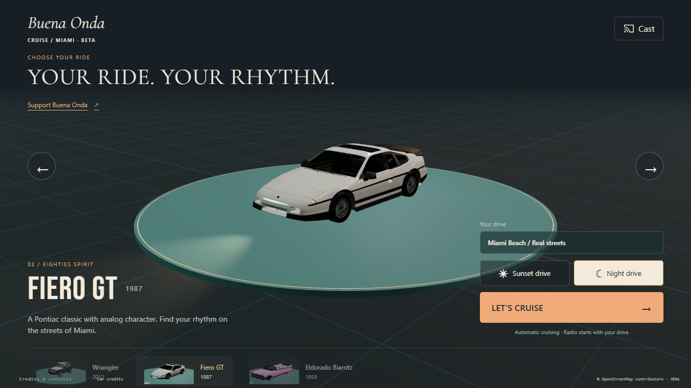
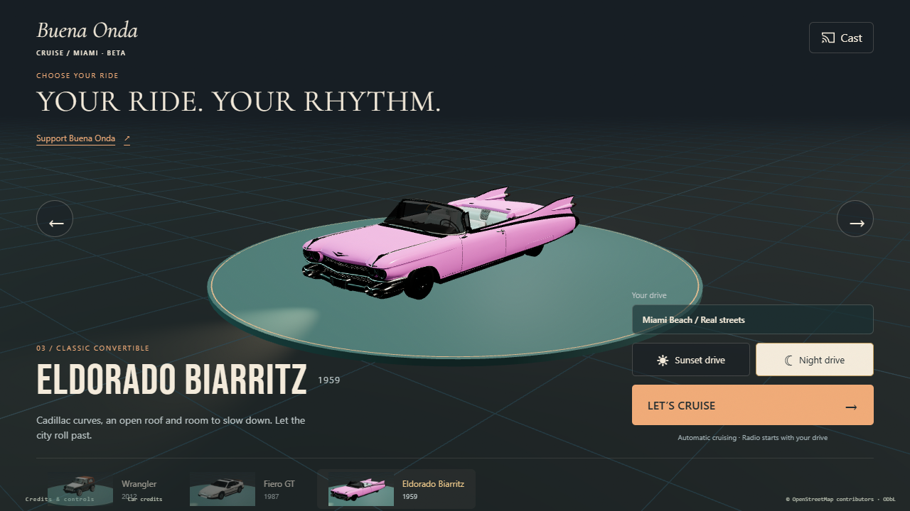
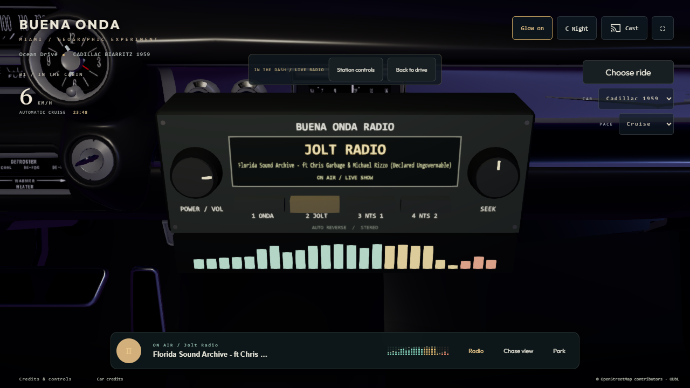
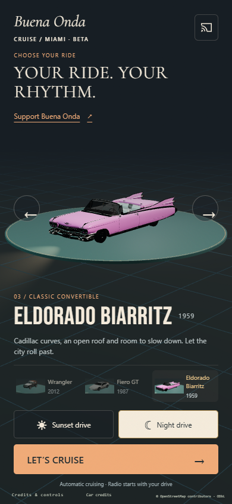
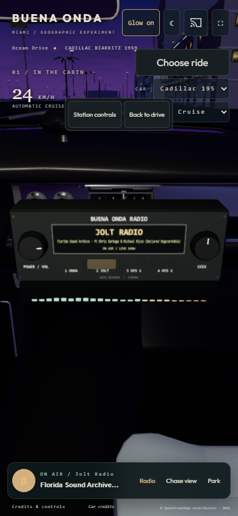

Wrangler 2012 · Fiero GT 1987 · Eldorado Biarritz 1959. Local production build, desktop and portrait viewport emulation. No deployment.
Open the whole experience · Actual test results · Validation and remaining scope






